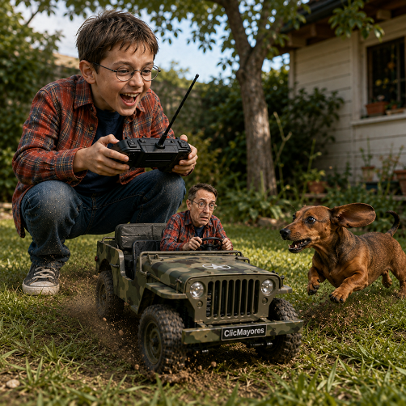

MI YO CONTROLA MI VEHICULO

🎬 Guía rápida de uso — “Mi yo de 8 años controla mi vehículo”
1. Primero: carga la foto de referencia
Usá una foto donde se vea claramente a la persona adulta. Idealmente:
- Rostro bien visible
- Buena iluminación
- Sin filtros
- Cuerpo parcialmente visible
- Ropa que quieras conservar
2. Completá solamente estos 9 datos
No hace falta tocar el resto del prompt.
| Dato | Ejemplo |
|---|---|
| 👤 Foto | Tu foto de referencia |
| 🚜 Vehículo | Tractor |
| 🔧 Estilo | Tractor antiguo |
| 🎨 Color | Rojo |
| 🔢 Patente | ABC 123 |
| ✍️ Texto | AI DAN SOLUTIONS |
| 🌳 Escenario | Jardín de la casa |
| 👕 Vestimenta | Mantener ropa de la foto |
| 📐 Formato | Horizontal 16:9 |
Ejemplo completo:
3. ¿Qué cosas podés cambiar?
Lo interesante del prompt es que la estructura permanece igual y solamente cambiás algunos elementos.
🚗 Vehículos: Podés probar tractor, Jeep, auto deportivo, camioneta, colectivo, locomotora, lancha, barco, helicóptero, avión, scooter, moto, bicicleta, camión.
Por ejemplo:
4. 🌎 También podés cambiar completamente el escenario
Esto modifica muchísimo el resultado.
- Escenarios tranquilos: jardín, patio, plaza, parque, campo, playa.
- Escenarios cinematográficos: bosque, montaña, desierto, puerto, estación de tren, aeropuerto, ruta, ciudad.
- Escenarios divertidos:
- Mi yo de 8 años controla el tractor mientras el adulto intenta esquivar los canteros del jardín.
- Mi yo de 8 años controla la lancha mientras el adulto intenta mantener el equilibrio.
- Mi yo de 8 años controla el Jeep mientras el adulto atraviesa un pequeño circuito de obstáculos.
5. 😂 Podés cambiar la situación cómica
Esta es una de las mejores opciones del prompt.
- Opción A — Sorpresa: El adulto mira hacia afuera con cara de: “¿Qué está haciendo este chico?”
- Opción B — Terror divertido: El niño está feliz mientras el adulto parece aterrorizado.
- Opción C — Competencia: El niño está concentradísimo intentando ganar una carrera.
- Opción D — Travesura: El niño tiene una expresión de picardía mientras acelera.
- Opción E — Aventura: El vehículo acaba de realizar una maniobra espectacular.
- Opción F — Caos: El niño perdió parcialmente el control y el adulto intenta corregir el vehículo desde adentro.
6. 👦 El niño también puede tener distintas personalidades
- 😇 Niño inocente: expresión curiosa y divertida.
- 😏 Niño travieso: sonrisa pícara y mirada desafiante.
- 🎯 Niño concentrado: completamente concentrado en el control remoto.
- 🏆 Niño orgulloso: expresión de orgullo porque consiguió controlar el vehículo.
- 😂 Niño muerto de risa: riéndose mientras el adulto intenta mantener el control.
7. 👕 La ropa también es modificable
- Opción 1 — Continuidad: Mantener la vestimenta de la fotografía. El niño lleva una versión infantil de la misma ropa.
- Opción 2 — Cambiar la ropa: Por ejemplo: Niño de 8 años con overol de mecánico azul, zapatillas deportivas y gorra roja. Y el adulto puede conservar su ropa original.
8. 📐 Formatos que podés utilizar
No estás limitado a 16:9.
- Horizontal (16:9): Ideal para YouTube, videos, miniaturas, pantallas.
- Cuadrado (1:1): Ideal para Instagram, Facebook, publicaciones, imágenes compartibles.
- Vertical (9:16): Ideal para TikTok, Reels, Shorts, historias.
9. ⭐ Una opción muy importante: cambiar el nivel de fantasía
- REALISTA: Situación imposible, pero fotografiada como si realmente hubiera ocurrido.
- CINEMATOGRÁFICA: Más espectacular, con iluminación de película, movimiento y composición dramática.
- COMEDIA: Expresiones más divertidas y situación más absurda.
- AVENTURA: Más movimiento, polvo, agua, velocidad y acción.
- SURREALISTA: Situación todavía más imposible, pero manteniendo fotografía hiperrealista.
🧩 Mi recomendación: crear una plantilla corta
Para usarlo muchas veces, yo reduciría todo el proceso a esta ficha:
Y el resto del Prompt Maestro queda fijo. Así podés generar una serie completa simplemente cambiando esta ficha.
💡 Por ejemplo, una serie “MI YO DE 8 AÑOS”:
- 🚜 Tractor — jardín
- 🚤 Lancha — río
- 🏎️ Auto antiguo — pista
- 🚂 Tren — estación
- 🚁 Helicóptero — campo
- 🛻 Camioneta — barro
- 🏍️ Moto — camino rural
- ✈️ Avioneta — pista de aterrizaje
La idea central y las reglas de identidad/anatomía permanecen exactamente iguales; solamente cambiás la escena.
¿Qué es?
Recrea un nostálgico viaje en carretera donde tu versión infantil de 8 años conduce tu automóvil real mientras tu yo adulto viaja como copiloto sonriente y relajado.
¿Cómo usarlo?
- Abre Google Flow y utiliza Nano Banana 2 en aspecto 16:9.
- En Ingredients, sube tu foto actual como
Personaje 1y tu foto de niñez comoPersonaje 2. - Vincula ambas etiquetas en el prompt para asignar los roles de copiloto y pequeño conductor.
- Pega la instrucción, personaliza el modelo de vehículo y genera este fotograma entrañable.
Cómo personalizar / Parámetros:
Indica el modelo de tu auto, tipo de carretera (costera, desierto, atardecer) y vestimenta en los parámetros de la fórmula.
============================================================ 🎬 PROMPT MAESTRO — “MI YO DE 8 AÑOS CONTROLA MI VEHÍCULO” ============================================================ 🔴 DATOS QUE DEBE COMPLETAR EL USUARIO 1. FOTO DE REFERENCIA DEL USUARIO: [SUBIR FOTO] 2. TIPO DE VEHÍCULO: [Ejemplo: auto, camioneta, camión, tanque, barco, lancha, moto, tren, avión, helicóptero, tractor, excavadora, vehículo militar, etc.] 3. MODELO / ESTILO DEL VEHÍCULO: [Ejemplo: auto clásico, deportivo, 4x4, tanque militar, barco pirata, locomotora antigua, etc.] 4. COLOR DEL VEHÍCULO: [Escribir color] 5. PATENTE / MATRÍCULA: [Escribir exactamente el texto deseado] [Si no corresponde: SIN PATENTE] 6. NOMBRE / TEXTO ESPECIAL DEL VEHÍCULO: [Escribir texto opcional] [Si no corresponde: SIN TEXTO] 7. ESCENARIO: [Escribir escenario] [Ejemplo: living, jardín, playa, calle, bosque, puerto, aeropuerto, campo, etc.] 8. VESTIMENTA: [Mantener la ropa de la fotografía / o describir ropa] 9. FORMATO: [Vertical 4:5 / Horizontal 16:9] ============================================================ 🎥 OBJETIVO PRINCIPAL DE LA IMAGEN ============================================================ Crear una fotografía cinematográfica hiperrealista, divertida y visualmente sorprendente basada en la fotografía de referencia del usuario. La escena debe representar una situación cómica y extraordinaria: EL USUARIO ADULTO ESTÁ MINIATURIZADO Y SE ENCUENTRA REALMENTE SENTADO DENTRO DE UN VEHÍCULO A CONTROL REMOTO, MIENTRAS SU PROPIA VERSIÓN DE 8 AÑOS, ENORME EN COMPARACIÓN CON EL VEHÍCULO, LO CONTROLA DESDE EL EXTERIOR CON UN CONTROL REMOTO. La escena debe tener el mismo concepto visual y narrativo de una fotografía de un niño jugando con un vehículo RC, pero llevada a una situación cinematográfica mucho más elaborada y divertida. La situación debe parecer espontánea, absurda y cómica, pero al mismo tiempo completamente fotorealista. IMPORTANTE: NO crear una caricatura. NO convertir a los personajes en dibujos. NO deformar los cuerpos. NO utilizar cabezas desproporcionadamente grandes. NO utilizar manos gigantes. NO crear un adulto de aspecto plástico o de juguete. NO hacer que el adulto parezca pegado sobre el vehículo. NO colocar al adulto parcialmente atravesando la carrocería. NO fusionar al personaje con el vehículo. NO crear un personaje flotando. ============================================================ 👨 PERSONA ADULTA DENTRO DEL VEHÍCULO ============================================================ La persona de la fotografía de referencia debe aparecer como el ADULTO MINIATURIZADO dentro del vehículo. Debe conservar fielmente su identidad. Mantener: - rostro; - ojos; - cejas; - nariz; - boca; - mandíbula; - forma general de la cara; - cabello; - color del cabello; - tono de piel; - características físicas reconocibles; - apariencia general. El adulto debe ser claramente la misma persona de la fotografía. La edad del adulto debe mantenerse. NO rejuvenecer al adulto. NO convertirlo en un niño. NO convertirlo en una caricatura. NO modificar su identidad. ============================================================ 🚨 REGLA CRÍTICA: EL ADULTO DEBE ESTAR REALMENTE DENTRO ============================================================ Esta es una regla prioritaria. El adulto debe estar FÍSICAMENTE SENTADO DENTRO DEL HABITÁCULO DEL VEHÍCULO. Debe existir una relación física correcta entre: CUERPO DEL ADULTO ↓ ASIENTO ↓ VOLANTE / CONTROLES ↓ TABLERO ↓ PUERTAS ↓ PARABRISAS ↓ CARROCERÍA El cuerpo completo debe respetar la geometría interior del vehículo. Si el vehículo tiene cabina, el adulto debe estar dentro de la cabina. Si tiene puertas, las puertas deben rodear correctamente el cuerpo. Si tiene parabrisas, el adulto debe verse detrás del parabrisas. Si tiene techo, el adulto debe estar debajo del techo. Si tiene asiento, debe estar sentado sobre el asiento. Si tiene volante, sus manos pueden sujetarlo de manera natural. Los brazos deben salir desde los hombros correctamente. Las manos deben estar conectadas anatómicamente a los brazos. Las piernas deben estar dentro del espacio disponible del vehículo. Los pies deben estar ubicados naturally. El adulto debe tener un CUERPO HUMANO COMPLETO Y ANATÓMICAMENTE CORRECTO. NO mostrar solamente una cabeza pegada dentro del vehículo. NO mostrar una cabeza gigante. NO mostrar un torso flotando. NO atravesar el techo. NO atravesar el parabrisas. NO atravesar las puertas. NO fusionar brazos con la carrocería. NO fusionar piernas con el asiento. NO deformar el cuerpo para hacerlo entrar. El adulto debe parecer una PERSONA REAL MINIATURIZADA que físicamente está conduciendo el vehículo. ============================================================ 📏 ESCALA DEL ADULTO ============================================================ El adulto es miniaturizado, pero mantiene PROPORCIONES HUMANAS NORMALES. La miniaturización debe producirse mediante escala, NO mediante deformación anatómica. Es decir: NO reducir solamente la cabeza. NO reducir solamente el cuerpo. NO cambiar las proporciones humanas. Reducir proporcionalmente TODO EL CUERPO. Cabeza, cuello, torso, brazos, manos, piernas y pies deben mantener proporciones humanas naturales. El adulto debe ser aproximadamente del tamaño adecuado para ocupar el habitáculo del vehículo. Debe parecer que el vehículo fue construido como un vehículo RC suficientemente grande para contener físicamente a una persona miniaturizada. ============================================================ 👦 VERSIÓN INFANTIL DEL USUARIO ============================================================ Fuera del vehículo debe aparecer una versión infantil del mismo usuario. La edad debe ser aproximadamente: 8 AÑOS. El niño debe ser claramente una versión infantil del adulto de la fotografía. Debe conservar características familiares del rostro: - forma de ojos; - cejas; - nariz; - boca; - estructura facial; - cabello; - color del cabello; - tono de piel; - características reconocibles. Debe parecer REALMENTE el mismo individuo cuando tenía aproximadamente 8 años. No debe parecer un niño genérico. No debe parecer otra persona. No debe ser una caricatura. Debe tener anatomía normal de un niño de 8 años. ============================================================ 👕 VESTIMENTA DEL NIÑO ============================================================ El niño debe utilizar una versión infantil de la vestimenta del adulto. Si se indicó: “MANTENER LA VESTIMENTA DE LA FOTO” recrear el mismo estilo, colores y elementos principales de la ropa, adaptados naturalmente al cuerpo de un niño de 8 años. La ropa debe ser realista. ============================================================ 🎮 CONTROL REMOTO ============================================================ El niño debe estar fuera del vehículo sosteniendo un auténtico control remoto de radiofrecuencia. Debe utilizar ambas manos de manera natural. El control debe tener: - antena; - botones; - gatillos; - controles; - rueda de dirección cuando corresponda; - indicadores; - detalles electrónicos; - textura realista. Debe quedar MUY CLARO que el niño está controlando el vehículo. El niño debe mirar hacia el vehículo mientras lo controla. Su postura debe demostrar concentración y diversión. ============================================================ 😂 SITUACIÓN CÓMICA Y DIVERTIDA ============================================================ La imagen NO debe ser simplemente un niño sentado tranquilamente manejando. Debe contar una pequeña historia visual. Crear una situación cómica, espontánea y ligeramente exaggerated. La escena debe transmitir la sensación de: “Mi versión de 8 años está jugando con un vehículo a control remoto, pero dentro del vehículo está mi versión adulta, intentando conducir mientras mi yo pequeño tiene completamente el control.” El adulto puede mostrar una expresión de: - sorpresa; - preocupación divertida; - emoción; - incredulidad; - desesperación cómica; - concentración; - diversión. El niño debe mostrar: - concentración; - emoción; - picardía; - diversión; - orgullo por estar controlando el vehículo. La reacción del adulto y la actitud del niño deben crear el humor de la escena. ============================================================ ⚠️ EXAGERACIÓN MODERADA ============================================================ La escena debe ser EXAGERADA MODERADAMENTE. NO hacer una caricatura. NO utilizar proporciones absurdas. NO hacer cabezas gigantes. NO hacer ojos enormes. NO deformar rostros. NO exagerar las extremidades. La exageración debe surgir principalmente de: - la diferencia de escala; - la situación absurda; - la expresión facial; - la perspectiva; - el movimiento; - el entorno; - la reacción de los personajes. Debe parecer una fotografía REAL de una situación imposible y divertida. ============================================================ 🚗 VEHÍCULO ============================================================ Utilizar exactamente: [TIPO DE VEHÍCULO] con el estilo: [MODELO / ESTILO] y color: [COLOR] El vehículo debe ser una miniatura funcional de alta calidad. Debe conservar todas las características físicas propias del vehículo solicitado. El vehículo debe tener: - materiales realistas; - detalles mecánicos; - ruedas, orugas, hélices o componentes correspondientes; - reflejos naturales; - pequeñas imperfecciones; - superficies físicamente correctas; - escala coherente. NO cambiar el tipo de vehículo solicitado. ============================================================ 🌎 ESCENARIO Y MOVIMIENTO ============================================================ La escena ocurre en: [ESCENARIO] El vehículo debe estar interactuando físicamente con el escenario. Debe parecer que está EN MOVIMIENTO o acaba de realizar una maniobra. Crear elementos dinámicos apropiados: Si es vehículo terrestre: polvo, pequeñas partículas, movimiento de ruedas, huellas o salpicaduras cuando corresponda. Si es barco: agua salpicando, ondas y movimiento. Si es tren: movimiento sobre vías. Si es avión: sensación de vuelo o despegue apropiada para un modelo RC. Si es helicóptero: movimiento de las hélices y partículas ambientales. Adaptar automáticamente la acción al vehículo seleccionado. ============================================================ 📸 COMPOSICIÓN ============================================================ La composición debe recordar visualmente a una fotografía de un niño jugando con un vehículo RC: El niño debe ocupar una posición visualmente dominante en comparación con el vehículo. El vehículo debe estar en primer o segundo plano según la composición. El adulto debe ser claramente visible dentro del vehículo. Debe existir una relación visual inmediata entre: NIÑO → CONTROL REMOTO → VEHÍCULO → ADULTO. Los cuatro elementos deben poder entenderse en una sola mirada. Crear una perspectiva que refuerce la diferencia de escala. El entorno debe parecer grande en comparación con el vehículo y el adulto miniaturizado. ============================================================ 🔢 PATENTE / MATRÍCULA ============================================================ Si el usuario escribió: [PATENTE / MATRÍCULA] mostrar EXACTAMENTE ese texto. No cambiar caracteres. No inventar letras. No inventar números. No modificar el orden. Colocarlo en una ubicación físicamente lógica del vehículo. Si dice: SIN PATENTE no crear ninguna patente. ============================================================ ✍️ TEXTO ESPECIAL ============================================================ Si el usuario escribió: [NOMBRE / TEXTO ESPECIAL] integrarlo exactamente en una ubicación apropiada del vehículo. No cambiar el texto. No agregar textos adicionales. Si dice: SIN TEXTO no agregar ningún texto. ============================================================ 🎥 FOTOGRAFÍA CINEMATOGRÁFICA ============================================================ Crear una fotografía hiperrealista de alta producción. Aspecto de película cinematográfica. Iluminación profesional. Profundidad de campo natural. Bokeh cinematográfico. Perspectiva realista. Lente cinematográfica. Sombras naturales. Reflejos físicamente correctos. Texturas detalladas. Piel realista. Cabello realista. Ropa realista. Materiales del vehículo realistas. Iluminación coherente sobre personajes y vehículo. Todos los elementos deben parecer fotografiados en el MISMO MOMENTO Y LUGAR. NO utilizar apariencia de CGI. NO utilizar apariencia de videojuego. NO utilizar apariencia de ilustración. NO utilizar apariencia de juguete plástico. El vehículo puede ser una miniatura, pero debe tener materiales fotorealistas. ============================================================ 🧍 ANATOMÍA ============================================================ Todos los personajes deben tener anatomía humana correcta. Especialmente el adulto dentro del vehículo. Verificar: - cabeza correctamente conectada al cuello; - cuello conectado al torso; - brazos correctamente conectados; - manos correctamente conectadas; - piernas correctamente conectadas; - pies correctamente conectados; - postura natural; - dedos naturales; - articulaciones correctas. NO dedos adicionales. NO manos deformes. NO brazos adicionales. NO piernas adicionales. NO cuerpos fusionados. NO extremidades flotantes. NO partes del cuerpo atravesando objetos. ============================================================ 👨👦 IDENTIDAD Y CONSISTENCIA ============================================================ Debe existir una relación visual clara entre el adulto y el niño. ADULTO: misma identidad de la fotografía. NIÑO: versión plausible del mismo adulto a los 8 años. No crear dos personas diferentes. No mezclar identidades. No cambiar rasgos principales. ============================================================ 🎯 REGLA FINAL DE ESCENA ============================================================ Antes de generar la imagen, comprobar mentalmente que la escena pueda describirse así: “Un niño de aproximadamente 8 años está jugando con un vehículo a control remoto. El vehículo es lo suficientemente grande para contener físicamente una versión miniaturizada y REALISTA del adulto de la fotografía. El adulto está COMPLETAMENTE DENTRO del vehículo, sentado de forma anatómicamente correcta, interactuando con sus controles y reaccionando cómicamente mientras el niño lo maneja desde afuera.” Si la imagen no comunica esta idea inmediatamente, corregir la composición antes de generar. El adulto debe parecer una PERSONA REAL MINIATURIZADA dentro de un vehículo RC, NO un muñeco, NO una cabeza pegada, NO un personaje deformado. ============================================================ 🏆 RESULTADO FINAL ============================================================ Crear UNA ÚNICA IMAGEN. Una fotografía cinematográfica hiperrealista. Divertida. Sorprendente. Con exageración moderada. Con una situación cómica claramente comprensible. Con una excelente relación entre escala, perspectiva y anatomía. El resultado debe provocar una reacción inmediata de: “¡Mirá! Su versión de 8 años lo está manejando a control remoto.” La imagen debe ser visualmente impactante, pero seguir pareciendo una fotografía real. NO agregar explicaciones. NO agregar texto fuera de los textos solicitados. NO crear personajes adicionales. NO crear otra escena. GENERAR SOLAMENTE LA IMAGEN FINAL.